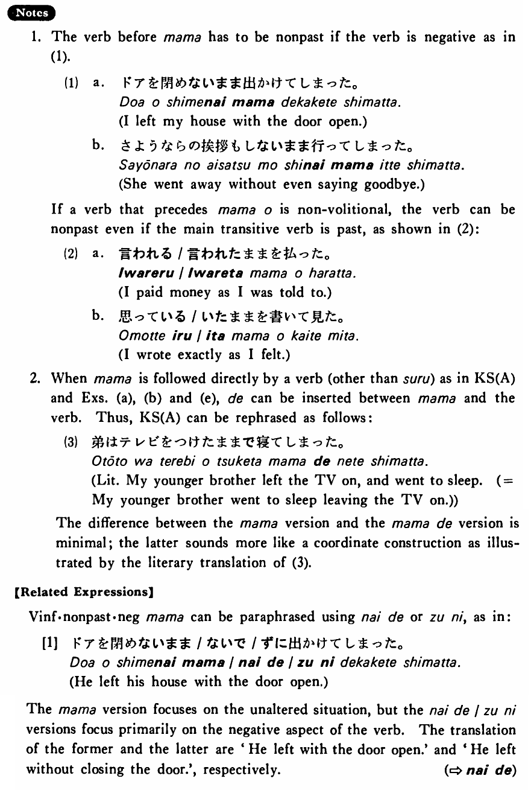

←
DoJG
→
まま
(B. 236)
Example sentences
(ksa).
弟はテレビをつけた
まま
寝てしまった・しまいました。
My younger brother went to sleep leaving the TV on.
(ksb).
弟はテレビをつけた
まま
にしておいた・おきました。
My younger brother left the TV on.
(ksc).
弟はテレビをつけた
まま
だ・です
My younger brother has left the TV on.
(ksd).
この部屋は昨日の
まま
だ・です。
This room is as it was yesterday.
(kse).
ここはこの
まま
にしておく・おきます。
I'll leave this place as it is.
(ksf).
テレビがついた
まま
になっている・います。
The TV was turned on and is still on.
(ksg).
帽子を被った
まま
の学生が教室にいた・いました。
A student who kept his hat on was in the classroom.
(a).
電気をつけた
まま
寝てしまいました。
I fell asleep leaving the light on.
(b).
ビールを買った
まま
飲まなかった。
I bought beer, but didn't drink it.
(c).
聞いた
まま
を友達に話しました。
I told my friend exactly what I heard.
(d).
あの人はあれからずっと寝た
まま
だ。
He's been in bed (literally: all along) since then.
(e).
高山さんはアメリカへ行った
まま
帰らなかった。
Mr. Takayama went to America never to return.
(f).
車のエンジンをかけた
まま
にしておいた。
I left the car engine on.
(g).
今の
まま
にしておいてください。
Please leave it as it is now.
Formation
(i)
Vinformal past
まま
(電気を)つけた
まま
Leaving (the light) on
(ii)
Adjective い
まま
大きい
まま
As something is big
(iii)
{Adjective な stem/ Noun の}
まま
不便
なまま
Leaving something is inconvenient
昔
のまま
Leaving something as it was
